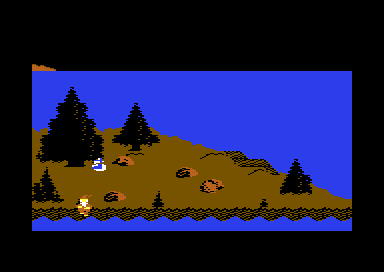

<meta charset="utf-8">
<meta name="viewport" content="width=device-width, initial-scale=1">
<title>Time Tunnel</title>
<link rel="preconnect" href="https://fonts.googleapis.com">
<link rel="stylesheet" href="https://fonts.googleapis.com/css2?family=Lato:wght@400;700;900&family=IBM+Plex+Mono:wght@400;500&display=swap">
<style>
:root{
  --bg:#23262d; --paper:#e9e7e1; --surface:#ffffff; --surface-2:#f1efea; --line:#d5d3cc; --line-soft:#e0ded8;
  --ink:#2f3136; --ink-soft:#55585f; --ink-mute:#80838a;
  --link:#1f5fa8; --link-hover:#154480; --accent:#1f5fa8;
  --amber:#c25a00; --cyan:#1f5fa8; --coral:#d04a3a; --green:#2a8a4a; --violet:#4a5bd6; --hl:#fff0c2;
  --chip:#2f3136; --chip-ink:#ffffff;
  --c64blue:#40318d; --c64grey:#686868;
  --fd:'Lato',system-ui,sans-serif; --fb:'Lato',system-ui,sans-serif; --fm:'IBM Plex Mono',ui-monospace,Menlo,monospace;
  --col:1080px; --gx:68px; --fs:17px; --lh:1.6; --hw:900; --h1:46px; --h2:26px; --sy:48px; --pp:26px; --r:10px;
  --plate-shadow:0 1px 2px rgba(0,0,0,.05),0 4px 14px rgba(0,0,0,.05);
}
*{box-sizing:border-box}
html{background:var(--bg);min-height:100%}
body{background:var(--paper);color:var(--ink);font-family:var(--fb);font-size:var(--fs);line-height:var(--lh);max-width:var(--col);margin:0 auto;min-height:100vh;padding:0 0 4rem}
h1,h2,h3{font-weight:var(--hw);letter-spacing:-.01em;text-wrap:balance;color:var(--ink);margin:0}
.wrap{padding:0 var(--gx)}
.hero{padding:48px var(--gx) 8px;text-align:left}
.eyebrow{font-family:var(--fm);font-size:12px;letter-spacing:.08em;text-transform:uppercase;color:var(--ink-mute);margin:0 0 10px}
.hero h1{font-size:var(--h1);line-height:1.15;letter-spacing:-.02em;margin:0 0 14px}
.hero .sub{margin:0 0 .6em;color:var(--ink-soft)}
section{padding:var(--sy) 0 24px}
section:last-of-type{border-bottom:none}
.fig{font-family:var(--fm);font-size:12px;letter-spacing:.08em;text-transform:uppercase;color:var(--ink-mute);margin:0 0 10px}
h2.t{font-size:var(--h2);margin-bottom:12px}
.lede{color:var(--ink-soft);margin:0 0 30px}
.plate{background:var(--surface);border:1px solid var(--line);border-radius:var(--r);padding:var(--pp);box-shadow:var(--plate-shadow)}
.cap{font-size:14px;color:var(--ink-mute);margin-top:14px;line-height:1.55}
.cap b{color:var(--ink);font-weight:700}
code{font-family:var(--fm);font-size:.82em;background:var(--chip);color:var(--chip-ink);border-radius:4px;padding:2px 6px;overflow-wrap:break-word;-webkit-box-decoration-break:clone;box-decoration-break:clone}

.tt-shots{display:grid;grid-template-columns:repeat(auto-fit,minmax(240px,1fr));gap:12px}
.tt-shots figure{margin:0}
.tt-shots img,.tt-shots canvas{display:block;width:100%;height:auto;image-rendering:pixelated;border-radius:4px;background:#000}
.tt-shots figcaption{font-size:13px;color:var(--ink-mute);margin-top:6px}
.tt-cv{display:block;width:100%;height:auto;image-rendering:pixelated;background:#000;border-radius:4px}
.tt-bar{display:flex;gap:8px;flex-wrap:wrap;align-items:center;margin:0 0 14px}
.tt-bar button{font-family:var(--fm);font-size:13px;background:var(--surface-2);border:1px solid var(--line);border-radius:6px;padding:6px 11px;cursor:pointer;color:var(--ink)}
.tt-bar button[aria-pressed="true"]{background:var(--chip);color:var(--chip-ink);border-color:var(--chip)}
.tt-tab{border-collapse:collapse;width:100%;font-size:14px;margin-top:14px}
.tt-tab th,.tt-tab td{border-bottom:1px solid var(--line-soft);padding:6px 8px;text-align:left;vertical-align:top}
.tt-tab th{font-family:var(--fm);font-size:12px;letter-spacing:.06em;text-transform:uppercase;color:var(--ink-mute);font-weight:500}
.tt-tab td.n{font-family:var(--fm);text-align:right}
.tt-wrapx{overflow-x:auto}
.tt-objview{display:flex;gap:18px;flex-wrap:wrap;align-items:flex-start}
.tt-objview canvas{flex:none;width:288px;max-width:100%;height:auto;image-rendering:pixelated;background:#1a1a1a;border-radius:4px}
.tt-objview table{flex:1;min-width:220px;margin-top:0}
.tt-hex{font-family:var(--fm);font-size:13px;line-height:1.5;background:#1a1a1a;color:#e9e7e1;border-radius:6px;padding:12px 14px;overflow-x:auto;white-space:pre}
.tt-sprites{display:flex;gap:22px;flex-wrap:wrap;align-items:flex-start}
.tt-sprites figure{margin:0}
.tt-sprites canvas{display:block;max-width:100%;image-rendering:pixelated;border-radius:4px}
.tt-sprites canvas+canvas{margin-top:8px;border-radius:0}
.tt-sprites figcaption{font-size:13px;color:var(--ink-mute);margin-top:6px;max-width:270px}
</style>
<!-- tabs -->
<header class="hero">
  <p class="eyebrow">1985 · U.S. Gold</p>
  <h1>Time Tunnel</h1>
  <p class="sub">A lid in Persia that moves a piece of the scripture in Salem, a closet that holds half what was promised, and a line of the developers' own notes left in the program.</p>
</header>
<main class="wrap">

<section id="lid">
  <p class="fig">01 · Persia and Salem</p>
  <h2 class="t">Bug: the basket's lid moves Salem's piece of the scripture</h2>
  <p class="lede">Putting the lid back on the snake's basket in Persia writes its position into another object's record. Which object depends on what else lies in the room.</p>
  <div class="plate tt-shots">
    <figure><figcaption>Salem's hillside, the second rock lifted: the piece of the scripture appears where the rock lay, at x <code>$2C</code>, y <code>$6E</code>.</figcaption></figure>
    <figure><figcaption>The same, after the lid has gone back on the basket with the lamp in Persia's room: the piece appears at x <code>$1E</code>, y <code>$6B</code>, against the tree.</figcaption></figure>
  </div>
  <p>Every object has a number, and the game keeps its position in two tables in memory, one byte per object: its x in the table that starts at address <code>$076E</code>, and its y in the one at <code>$07D7</code> (a <code>$</code> marks a number in hexadecimal, base 16). An object on the screen also has a sprite, one of the eight pictures the video chip moves over the screen by itself, and each sprite has a number of its own.</p>
  <p>The lid (object <code>$35</code>) put down against the basket is set back on top of it, at x <code>$1E</code>, y <code>$6B</code> (<code>persia_lid</code>, <code>$1CA1</code>). The code writes those two numbers to the lid's sprite, and then into the tables at <code>$0772</code> and <code>$07DB</code>, counting along by the lid's sprite number. Those addresses are four bytes into the tables of x and y, so the position goes to object 4 plus the sprite number, not to the lid.</p>
  <p>The lid's sprite number depends on the room. <code>room_enter</code> hands out sprites from 7 down, in object order. At the start of a game the room holds the lid and the basket, so the lid gets sprite 7, and the position lands on object <code>$0B</code>, the scorpion in the gold rush. The game sets the scorpion's height again whenever the gnome enters the gold rush, but keeps the new x, so the scorpion starts 20 steps further left. The walkthroughs have the player bring the lamp into this room (object <code>$33</code>, lower than the lid), and then the lid gets sprite 6 and the position lands on object <code>$0A</code>: Salem's piece of the scripture. It has not appeared yet, and when the gnome lifts the rock on Salem's hillside the piece shows where its record says, 14 steps left and 3 lines up from where the game put it.</p>
  <p>Both were tried in the emulator. With the lid set against the basket for one frame, the scorpion's record went from x <code>$32</code>, y <code>$9C</code> to <code>$1E</code>, <code>$6B</code>; with the lamp in the room as well, Salem's piece went from <code>$2C</code>, <code>$6E</code> to <code>$1E</code>, <code>$6B</code>. The lid still lies on the basket when a game starts, but not touching it by the game's own test, so the bug waits until the player takes the lid off and puts it back.</p>
</section>

<section id="closet">
  <p class="fig">02 · The closet</p>
  <h2 class="t">The closet lets the gnome leave with four objects in it</h2>
  <p class="lede">The game's description says the closet stores up to eight objects. With five lying in it, the gnome cannot leave.</p>
  <div class="plate"><table class="tt-tab">
    <tr><th>Lying in the closet</th><th>Button held</th></tr>
    <tr><td>the torch and three more objects</td><td>he leaves after 60 frames</td></tr>
    <tr><td>the torch and four more objects</td><td>he stays, and a sound plays</td></tr>
    <tr><td>the torch and one piece of the scripture</td><td>he stays</td></tr>
  </table>
  <p class="cap">From the emulator: the objects put in the closet, then the button held from the living room for 400 frames. The closet's code is <code>closet_pass</code> (<code>$116A</code>).</p></div>
  <p>Before the gnome leaves, <code>closet_pass</code> counts the objects lying in the closet, not the one he carries. Each object adds one. Every object has a byte of flags, eight on-off settings, and an object whose bit 6 is on puts the count at five instead, and only the seven pieces of the scripture have that bit. With five or more, he stays. So the closet keeps four objects at most when he wants out, and never a piece.</p>
  <p>The torch starts in the closet and counts as one of the four. A piece of the scripture left in the closet keeps the gnome in with it until he picks it up again.</p>
</section>

<section id="leftovers">
  <p class="fig">03 · Leftovers</p>
  <h2 class="t">Secret: the developers' notes and another computer's code</h2>
  <p class="lede">Three stretches of the program hold things nobody was meant to see: a line of source code comments, code for a different processor, and a word from a disk tool.</p>
  <div class="plate"><div class="tt-hex" id="tt-tail"></div>
  <p class="cap">The last 86 bytes of the program, <code>$C5A8</code>-<code>$C5FD</code>, after the last tune, as hexadecimal and as text. Nothing reads them.</p></div>
  <p>The program ends with 86 bytes that nothing reads (<code>source_fragment</code>). The first 52 are text, with the line ends of CP/M and MS-DOS, the operating systems of the business computers of the time: "ments if he will move outside entire screen", a line holding only a semicolon, and "whol". They are the end of a comment in the game's source, still in memory when the file was saved. The rest are code for the Z80, a different processor from the C64's: they read and rewrite the addresses kept at 1 and 6, which on a CP/M computer are where its programs jump to restart and to call the operating system. So the program was probably put together on a CP/M machine, and its last bytes came from that machine's memory.</p>
  <div class="plate"><div class="tt-hex" id="tt-throne"></div>
  <p class="cap">The throne room's character set as the game unpacks it to <code>$F000</code>, characters 121 to 128, <code>$F3C8</code>-<code>$F407</code>. The throne room's screen uses none of them.</p></div>
  <p>The throne room's character set unpacks to 129 characters (<code>throne_charset</code>). The last eight hold no pictures, and among their bytes is the text "Bytes/sector:", the kind of label a disk utility prints. The set was most likely saved from memory that such a program had used.</p>
  <p>The program's first nine bytes, at <code>$0900</code>, are the start of a cartridge: two addresses of the game's start, <code>$0CDA</code>, and the letters "CBM80" that the C64 looks for when it is switched on. The C64 looks for them at <code>$8004</code>, so here they do nothing (<code>cartridge_header</code>).</p>
</section>

<section id="unused">
  <p class="fig">04 · Unused pictures</p>
  <h2 class="t">Pictures the game never shows</h2>
  <p class="lede">A few frames and two whole objects are drawn and stored, and never appear.</p>
  <div class="plate"><div class="tt-sprites" id="tt-unused"></div>
  <p class="cap">Drawn by the game's own <code>sprite_draw</code> (<code>$A185</code>) on the site's copy of the C64's processor, asked for frames the game never asks for, and played at the game's speed: each frame lasts as many frames of play, fiftieths of a second, as the object's table says. Each is on the plain colour that shows it best.</p></div>
  <p>Medusa's two halves (objects <code>$56</code> and <code>$57</code>) have three frames each, and a fourth is stored after them. The burning dynamite (<code>$34</code>) has four, and a fifth follows. The objects' frame counts never reach the extra frames, and no code sets them. Objects <code>$46</code> and <code>$47</code> are thin dark shapes with a place in every table, but they start nowhere and no code names them. The basket's lid has a third row of picture that is never copied into its sprite.</p>
</section>

<section id="warble">
  <p class="fig">05 · Sound</p>
  <h2 class="t">Bug: two warbles that are one</h2>
  <p class="lede">The sound effects have two warble commands, 9 and <code>$A</code>, and each loads a different amount. Both do the same thing.</p>
  <p>Command <code>$A</code> loads <code>$80</code> and command 9 loads <code>$40</code>, and both go on into the same code (<code>sfx_cmd_warble</code>, <code>$BB82</code>). The pitch is a number too big for one byte, so it is kept in two, a low byte and a high byte. The next instruction subtracts the pitch's low byte from itself, which leaves <code>$FF</code> (255) whatever the pitch was, and stores that over the amount. So the amount is never used, and each warble step lowers the pitch's high byte by one. The trip in time (effect 3) uses command 9 and the teleport (effect 4) uses <code>$A</code>; they warble alike. Both are on <a href="index.html#effects">the How it works page's effects player</a>.</p>
</section>

<section id="row24">
  <p class="fig">06 · The controls</p>
  <h2 class="t">The controls' screen runs into the hidden row</h2>
  <p class="lede">The time machine's controls are the one room whose packed screen does not stop at 960 cells.</p>
  <p>The screen is in 24-row mode, so the 25th row of characters is under the border. The controls' packed screen (<code>controls_screen</code>, <code>$40AA</code>) has no end marker where the other rooms have one, and runs on for 11 more cells into that row. In the emulator the hidden row held <code>0E 7F 00 0B 02 06 03 7B 19 19 7F</code> after the controls were drawn. Nothing shows, because the border covers them.</p>
</section>

</main>
<footer style="margin:16px 0 0;padding:22px var(--gx) 0;border-top:1px solid #e0ded8;font-family:'IBM Plex Mono',ui-monospace,Menlo,monospace;font-size:12px;color:#80838a"><a href="https://github.com/gamesexplained/gamesexplained" style="color:#1f5fa8;text-decoration:none">GitHub</a> · <a href="https://discord.gg/3V9GWyRDWV" style="color:#1f5fa8;text-decoration:none">Discord</a><br>© Games Explained contributors. Write-ups, facts and symbol maps are available under <a href="https://creativecommons.org/licenses/by-sa/4.0/" style="color:#1f5fa8;text-decoration:none">CC BY-SA 4.0</a>; code under <a href="https://opensource.org/licenses/MIT" style="color:#1f5fa8;text-decoration:none">MIT</a></footer>
<script src="../../lib/c64.js"></script>
<script src="../../lib/cpu6502.js"></script>
<script>
/* tt-rooms */
// ttRoom(ram, Cpu, era, room, torch): a room as the game draws it when the gnome walks in at the
// start of a game, for C64.renderFrame. On a copy of the listing's memory (ram), the kit's 6502
// (Cpu, C64Cpu on a page) runs the game's own code: the start-up's unpacking of obj_start_table
// with sprites_build and sprite_ptrs_set ($0D87-$0DD3), the screen's $D011 value that the start-up
// keeps in $A5 ($17, $0EC2), then era_load_charset ($3456) and room_enter ($3A47) for the era in $2A
// and the room in $19. $29 is 0, as on a walk from room to room, but 1 in the closet (era 2, room
// 9), which play_state enters with it set ($38C0). With torch, the gnome carries the torch (object
// $24, room 0) and it is lit ($AB = 1), which lights the dark rooms. The video chip's registers
// start as the emulator had them in play (TT_VIC, $D000-$D02E; TT_CIA2, $DD00 and $DD02: bank 3)
// and take the code's writes. The gnome's sprite (0), and the torch's when it is carried, are
// switched off: the picture shows the room. Returns { mem, vic, colourMem, cia2, cpu, writes }, and
// call(address, registers), which runs more of the game's code on the same memory and chips.
const TT_VIC = [132, 133, 0, 0, 0, 0, 0, 0, 0, 0, 0, 0, 0, 0, 192, 178, 0, 23, 0, 0, 0, 129, 216, 0, 237, 114, 241, 0, 129, 0,
  0, 129, 240, 240, 251, 242, 243, 248, 241, 247, 242, 243, 244, 245, 246, 247, 243];
const TT_CIA2 = [148, 63];
function ttRoom(ram, Cpu, era, room, torch) {
  const m = ram.slice(), vic = TT_VIC.slice(), colour = new Uint8Array(1024);
  let line = 0;
  const io = {
    read(a) {
      if (a === 0xD012) { line = (line + 1) % 312; return line & 0xFF; }
      if (a === 0xD011) { line = (line + 7) % 312; return (vic[0x11] & 0x7F) | (line > 255 ? 0x80 : 0); }
      if (a >= 0xD000 && a < 0xD02F) return vic[a - 0xD000];
      if (a >= 0xD800 && a < 0xDC00) return colour[a - 0xD800];
      if (a === 0xDC00 || a === 0xDC01) return 0xFF;
      return 0;
    },
    write(a, v) {
      if (a >= 0xD000 && a < 0xD02F) vic[a - 0xD000] = v;
      else if (a >= 0xD800 && a < 0xDC00) colour[a - 0xD800] = v & 15;
    },
  };
  const cpu = new Cpu.CPU(m, { port: 0x35, io });
  cpu.pc = 0x0D87; cpu.run({ until: 0x0DD4, maxSteps: 1e6 });
  m[0xA5] = 0x17;
  m[0x2A] = era; m[0x19] = room; m[0x29] = era === 2 && room === 9 ? 1 : 0;
  if (torch) { m[0x0705 + 0x24] = 0; m[0xAB] = 1; }
  cpu.call(0x3456, {}, { maxSteps: 1e6 });
  cpu.call(0x3A47, {}, { maxSteps: 1e6 });
  vic[0x15] &= 0xFE;
  if (torch && m[0x75] === 0x24) vic[0x15] &= ~(1 << m[0x74]);
  return { mem: m, vic, colourMem: colour, cia2: TT_CIA2, cpu: [47, 53], writes: [], lines: 312, cycles: 63,
    call: (a, regs) => cpu.call(a, regs || {}, { maxSteps: 1e6 }) };
}
// end of tt-rooms
</script>
<script>
/* tt-objects */
// ttFrames(ram, Cpu, obj, count): the frames of object obj as the game draws them into a sprite.
// On a copy of the listing's memory the kit's 6502 (Cpu) runs the start-up's sprites_build
// ($0ED3), which makes the mirrored frames of the gnome and the horse, then sprite_draw ($A185) once
// a frame, with slot 7 given the object ($4A) and the frame ($72), and reads back slot 7's buffer
// ($EDC0, 63 bytes). count is how many frames, from 0: obj_anim's bits 3-5 when it is left out
// (0 or 1 is one frame). Also returns the object's flags (obj_flags, $A230): its colour, double
// width (bit 6) and multicolour (bit 7).
function ttFrames(ram, Cpu, obj, count) {
  const m = ram.slice();
  const cpu = new Cpu.CPU(m, { port: 0x35, io: { read() { return 0; }, write() {} } });
  cpu.call(0x0ED3, {}, { maxSteps: 1e6 });
  const n = count || ((m[0xA29D + obj] >> 3) & 7) || 1, frames = [];
  for (let f = 0; f < n; f++) {
    m.fill(0, 0xEDC0, 0xEE00);
    m[0x4A] = obj; m[0x72] = f;
    cpu.call(0xA185, { x: 7 }, { maxSteps: 1e5 });
    frames.push(m.slice(0xEDC0, 0xEDFF));
  }
  const fl = m[0xA230 + obj];
  return { frames, colour: fl & 15, wide: !!(fl & 0x40), multi: !!(fl & 0x80) };
}
// end of tt-objects
</script>
<script>
(function () {
  const $ = (id) => document.getElementById(id);
  const missing = (el, what) => { el.insertAdjacentHTML('afterend', '<p class="cap">' + what + ' needs the site\'s shared scripts, which did not load.</p>'); };
  if (typeof C64 === 'undefined') { missing($('tt-tail'), 'This'); return; }
  const dump = (b, a) => {
    let s = '';
    for (let i = 0; i < b.length; i += 16) {
      const row = Array.from(b.subarray(i, i + 16));
      s += C64.hex(a + i).slice(1) + '  ' + row.map((v) => v.toString(16).toUpperCase().padStart(2, '0')).join(' ').padEnd(48) + '  ' +
        row.map((v) => (v >= 32 && v < 127 ? String.fromCharCode(v) : '.')).join('') + '\n';
    }
    return s;
  };
  C64.load('listing.json').then((L) => {
    const r = L.ram;
    $('tt-tail').textContent = dump(r.subarray(0xC5A8, 0xC5FE), 0xC5A8);
    if (typeof C64Cpu === 'undefined') { missing($('tt-throne'), 'This'); missing($('tt-unused'), 'These pictures'); return; }
    const F = ttRoom(r, C64Cpu, 9, 1);
    $('tt-throne').textContent = dump(F.mem.subarray(0xF3C8, 0xF408), 0xF3C8);
    // each picture at the game's speed, through every frame stored, on the black or grey that shows it best
    const P = C64.PAL, RGB = P.map((h) => [1, 3, 5].map((i) => parseInt(h.substr(i, 2), 16)));
    const lum = (c) => 0.299 * RGB[c][0] + 0.587 * RGB[c][1] + 0.114 * RGB[c][2];
    const greyFor = (parts) => {        // the colours the frames use ($D025 is orange and $D026 white in play)
      const used = new Set();
      for (const S of parts) for (const d of S.frames) for (const v of d) {
        if (S.multi) { for (let s = 0; s < 8; s += 2) if (v >> s & 3) used.add([0, 8, S.colour, 1][v >> s & 3]); } else if (v) used.add(S.colour);
      }
      let grey = 12, far = -1;
      for (const g of [0, 11, 12, 15]) { const d = Math.min(...[...used].map((c) => Math.abs(lum(c) - lum(g)))); if (d > far) { far = d; grey = g; } }
      return P[grey];
    };
    const draw = (ctx, S, f, x, y, s) => S.multi ? C64.drawSpriteMC(ctx, S.frames[f], x, y, s, P[S.colour], P[8], P[1], S.wide ? 2 : 1)
      : C64.drawSprite(ctx, S.frames[f], x, y, s, P[S.colour], S.wide ? 2 : 1);
    // objs drawn one under the other, as the game places Medusa's halves, or side by side (row); n frames,
    // of which the game shows the first `shown`
    const figure = (objs, n, cap, row) => {
      const parts = objs.map((o) => ttFrames(r, C64Cpu, o, n)), an = r[0xA29D + objs[0]], shown = (an >> 3 & 7) || 1;
      const grey = greyFor(parts), w = parts[0].wide ? 48 : 24, k = parts.length;
      const W = row ? k * w + (k - 1) * 4 : w, Hh = row ? 21 : 21 * k, at = (j, s) => row ? [j * (w + 4) * s, 0] : [0, j * 21 * s];
      const f = document.createElement('figure'), big = document.createElement('canvas'), strip = document.createElement('canvas');
      const bctx = C64.canvas(big, W * 4, Hh * 4), cw = W * 2, sctx = C64.canvas(strip, n * (cw + 6) - 6, Hh * 2 + 6);
      big.setAttribute('aria-label', cap); strip.setAttribute('aria-label', 'Every frame, the one showing marked');
      let cur = 0;
      const paint = () => {
        bctx.fillStyle = grey; bctx.fillRect(0, 0, W * 4, Hh * 4);
        parts.forEach((S, j) => { const [x, y] = at(j, 4); draw(bctx, S, cur, x, y, 4); });
        sctx.clearRect(0, 0, strip.width, strip.height);
        for (let i = 0; i < n; i++) {
          const x0 = i * (cw + 6);
          sctx.fillStyle = grey; sctx.fillRect(x0, 0, cw, Hh * 2);
          parts.forEach((S, j) => { const [x, y] = at(j, 2); draw(sctx, S, i, x0 + x, y, 2); });
          if (i >= shown) { sctx.strokeStyle = '#c25a00'; sctx.lineWidth = 2; sctx.strokeRect(x0 + 1, 1, cw - 2, Hh * 2 - 2); }
          sctx.fillStyle = i === cur ? '#1f5fa8' : '#d5d3cc'; sctx.fillRect(x0, Hh * 2 + 3, cw, 3);
        }
      };
      paint();
      f.appendChild(big);
      if (n > 1) { f.appendChild(strip); setInterval(() => { cur = (cur + 1) % n; paint(); }, (an & 7) * 20); }
      const c = document.createElement('figcaption'); c.textContent = cap; f.appendChild(c);
      $('tt-unused').appendChild(f);
    };
    figure([0x56, 0x57], 4, 'Medusa, her two halves ($56 over $57) together, a frame every 7 frames of play. The game shows frames 0 to 2; frame 3, outlined, never appears.');
    figure([0x34], 5, 'The burning dynamite ($34), a frame every 2 frames of play. The game shows frames 0 to 3; frame 4, outlined, never appears.');
    figure([0x46, 0x47], 1, 'Objects $46 and $47, one frame each, in black.', true);
  });
})();
</script>
